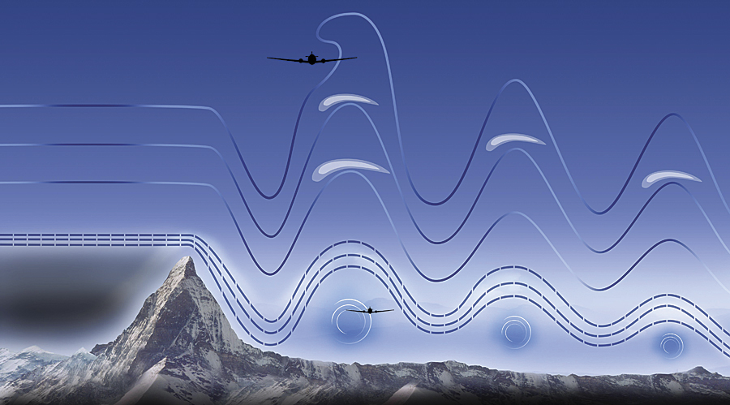

| 
|
\begin{verbatim}
[t,y]=ModifiedEuler(a,b,y0,N)\) \quad \text{sloves Diff. Eqn.} The universe is written in the language of mathematics (Galileo) |
 Physics Modeling
Physics Modeling
 Math Solution
Interpretation
Applications in Applied Science and Engineering
Math Solution
Interpretation
Applications in Applied Science and Engineering
Interactive Integration Slope and direction fields demo (courtesy of Dr. Darryl Nester)
MathJax examples Simulation
Math modeling and experimenting
Schedule of the class
| Class schedule by chapters/sections (tentative) | |||
|---|---|---|---|
| Math preliminaries; error analysis (Chapter 1) | Fixed point method; solutions of \(f(x)=0\) (Chapter 2) |
||
| (Interpolation and polynomial approximation) (Chapter 3) | |
||
| Exam 1 | |||
| Numerical Differentiation and integration (Chapter 4) | |||
| *Numerical ODE; dynamical system (Chapter 5) | Euler and Crank-Nicolson methods; stability |
||
| Direct methods solving linear systems (Chapter 6) | |||
| Interative Tech in Matrix Algebra; Approximation* (Chapter 7-8*) | |
||
| Exam 2* | |||
| Approximating Eigenvalues* (Chapter 9) | |||
| Numerical solutions to PDEs (Chapter 12) | |||
| Final Exam | |||
Homework/Project assignments
Office hours M and W 3:00-4:30 pm or by appointment
Important calendar dates
| Review | Exam | Date |
|---|---|---|
| Review Exam I | Exam I | |
| Review Exam II | Exam II | |
| Review Exam III | Exam III | |
| Review Final | Final Exam |